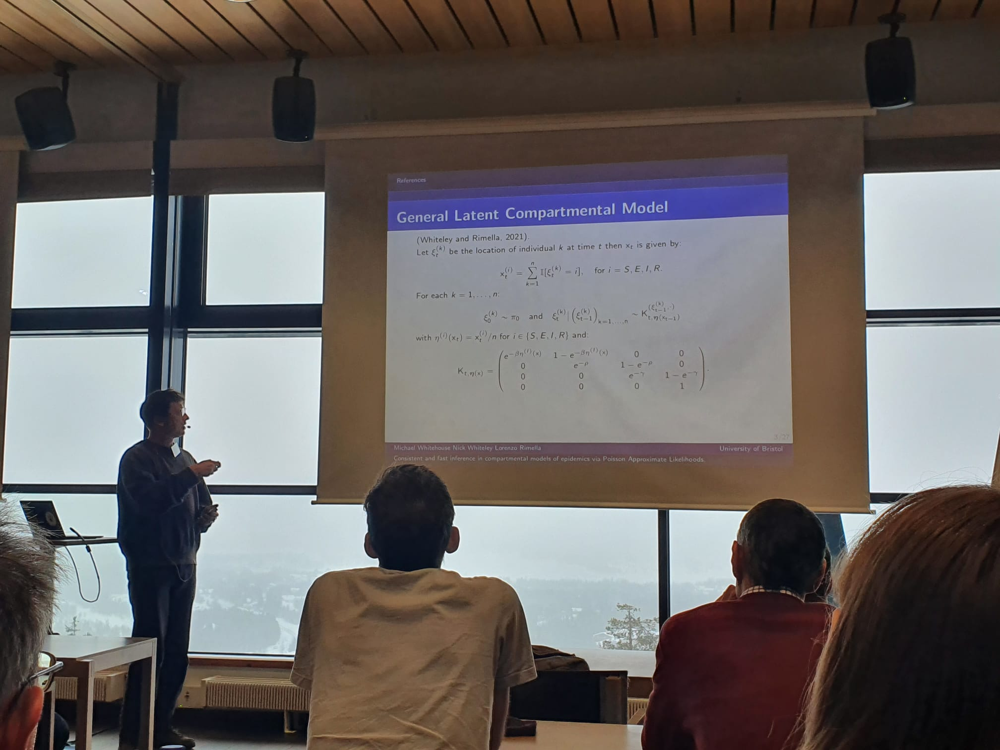
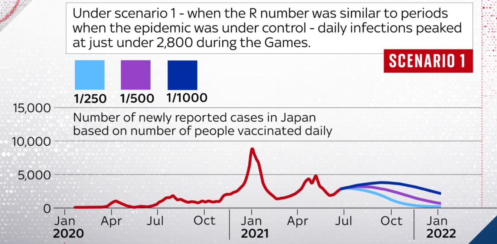

I am currently spending some time in industry.
Previously, I was a student at the Centre for Doctoral Training in Computational Statistics and Data Science at the University of Bristol, under the supervision of Professor Nick Whiteley. My PhD rsearch focused on principled approximate inference in agent based compartmental models of epidemics - an area I am still involved in.
After my PhD i spent a short period as a Postdoctoral Research Associate, working with Prof. Christophe Andrieu on the Bayes4Health grant, investigating the theoretical underpinnings of generative diffusion models. During this time I lectured part of a third year Statistical Machine Learning Course.
Past research projects include time series analysis and agent based modelling of asset returns. My undergraduate final year project concerned the modelling of webgraphs.
Consistent and fast inference in compartmental models of epidemics using Poisson Approximate Likelihoods Michael Whitehouse, Nick Whiteley, Lorenzo Rimella. Journal of the Royal Statistical Society: Series B (statistical methodology), 2023.
Contribution to the Discussion of “the Discussion Meeting on Probabilistic and statistical aspects of machine learning” Pierre-Aurelien Gilliot, Christophe Andrieu, Anthony Lee, Song Liu, and Michael Whitehouse. Journal of the Royal Statistical Society: Series B (statistical methodology), 2023.
Trend, Value, and crashes in financial markets: an agent based model for asset prices Working paper.
COMPSTAT 2022 - Bologna 23-26 August
Compass Conference 2022 - Bristol 13 September
Lancaster University Computational Statistics and Machine Learning group 2022 - Lancaster 6 October
Bayescomp 2023 - Levi, Finland 12-17 March
Lecturer:
Statistical Machine Learning 3 (2 weeks on regression)2024
Tutorial leader:
Statistics and probability 1 2020
Time series analysis 3 2020-2022
Further topics in probability 3/4 2022
I contributed some highly caveated analysis to a Sky News report on the potential impact of the pandemic on the Tokyo Olympics. This came in the form of some pretty naive modelling of the rise of COVID-19 cases in Japan in the summer of 2021 - not too epidemiologically interesting but a fun exercise nonetheless!
